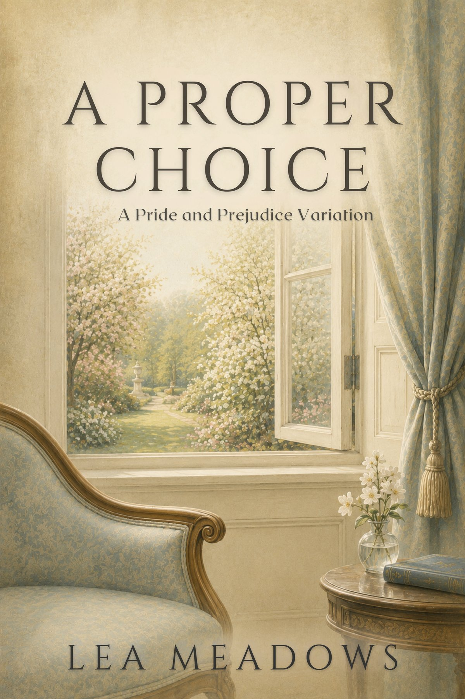

Chapter One
[ Paste the text of Chapter One here, one paragraph per <p> tag. ]

The Smaller Proofs Collection · Book 3
A Pride and Prejudice Sequel
Coming September 21, 2026
Anne de Bourgh has learned, at last, to want things. Now comes the harder lesson: to choose them.
With her health her own and her future no longer decided for her, Anne must weigh the safety of the life she was given against the uncertain promise of one she might build herself — and learn whether a happiness chosen by her own judgment can be trusted to hold.
Read the opening
[ Paste the text of Chapter One here, one paragraph per <p> tag. ]
[ Paste the text of Chapter Two here. ]
[ Paste the text of Chapter Three here. ]
[ Paste the text of Chapter Four here. ]
Let Lea write to you, and you’ll know the moment A Proper Choice is ready.
Form not loading? Sign up here instead →
No spam. Just chapters, story news, and the occasional note from the writing desk.